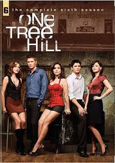

TEEN DRAMA
Never Have I Ever (2020- )
After a traumatic year, an Indian-American teen just wants to spruce up her social Status - but friends, family and feeling won't make it easy for her.Inspired by Mindy Kaling's own childhood being a modern day 1st generation Indian-American.
Genres : Drama,Comedy
No. of Seasons: 1
Available on Netflix
Review: 8.0/10 ⭐
The Fosters (2013-2018)
"How do you Define Family?"
Stef Foster and Lena Adams, a lesbian couple, have a family of adopted, biological, and foster children. Mariana and Jesus are adopted 15-year-old twins and Brandon is Stef's 16-year-old biological son from a previous marriage. Everything is going fine in the house until Callie and Jude arrive. 16-year-old Callie and her 12-year-old brother Jude have been in many different foster homes, but when they are placed with the Fosters, things begin to happen. In this series, the Fosters will deal with many different issues: hook-ups, break-ups, romances, and important life lessons.
Genres : Drama,Romance
No. of Seasons: 5
Available on Netflix and Disney+Hotstar
Review: 7.9/10 ⭐
All Americans (2018- )
"All's fair in love and cold wars"

Inspired by the true life story of NFL Superbowl Champion, Spencer Paysinger, All American is an inspiring, ensemble family drama about a young, high school football phenom, Spencer James and the two families whose homes he shares after transferring from Crenshaw to Beverly High - his mother and brother in South Central LA and the Bakers of Beverly Hills. But as these two families and their vastly different worlds are drawn together, Spencer, the Bakers, and the James family will discover that the differences that divide us on the surface hide a deeper connection - the complicated, imperfect humanity that unites us all.
Genres : Drama,Sports,Romance
No. of Seasons: 2
Available on Amazon Prime
Review: 7.6/10 ⭐
One Tree Hill (2003-2012)
"Where nothing changes until one outsider changed everything."

The lives of brothers Nathan and Lucas Scott as they travel through high school and college. The two brothers face among their friends the ups and downs of relationships and friendships. The pain of lose and love. The joy in family and friends. Lucas and Nathan do not start on the best of terms but through many hard times and struggles find the best in each other. Marriage, divorce, break-ups, birth, and death play a huge role.
Genres : Drama,Romance,Sports
No. of Seasons: 9
Available on Amazon Prime
Review: 7.6/10 ⭐
Step Up : High Water (2018-2019)

Step Up: High Water follows the students and faculty of "High Water, Atlanta’s most cutthroat performing arts school. When twins Tal and Janelle relocate from Ohio, they find themselves thrust into a world where every move is a test. As they attempt to navigate their new world— on and off the dance floor— they’ll discover just how deep they’re willing to dig to realize their dreams and seize their moment.
Genres : Dance,Drama,Music
No. of Seasons: 1
Available on Youtube Premium
Review: 7.5/10 ⭐
Gossip Girl (2007-2012)
"You no you love me.XOXO --Gossip girl"

Gossip Girl follows the lives of privileged teenagers on the upper east side. Serena Van Der Woodsen is a blonde and beautiful socialite. Everyone knows Serena. Blair Waldorf is Serena's best friend but it's always about Serena not Blair. Nate Archibald is Blair's boyfriend but ever since Serena came back from boarding school Nate has been acting strange. Chuck Bass is a rich and arrogant person. Daniel Humphrey, a lonely boy from Brooklyn, NY, who nobody knows. Follow the lives of this guilty pleasure show
Genres : Drama,Romance
No. of Seasons: 5
Available on Netflix
Review: 7.4/10 ⭐
Good Trouble (2019- )
"It's better if you define your work before someone else does."
From the hit series The Fosters, the spin-off Good trouble follows sisters Callie and Mariana as they move to Los Angles and begin their lives as yound adults.
Genres : Drama,Romance,Comedy
No. of Seasons: 2
Available on Netflix
Review: 7.4/10 ⭐
Back